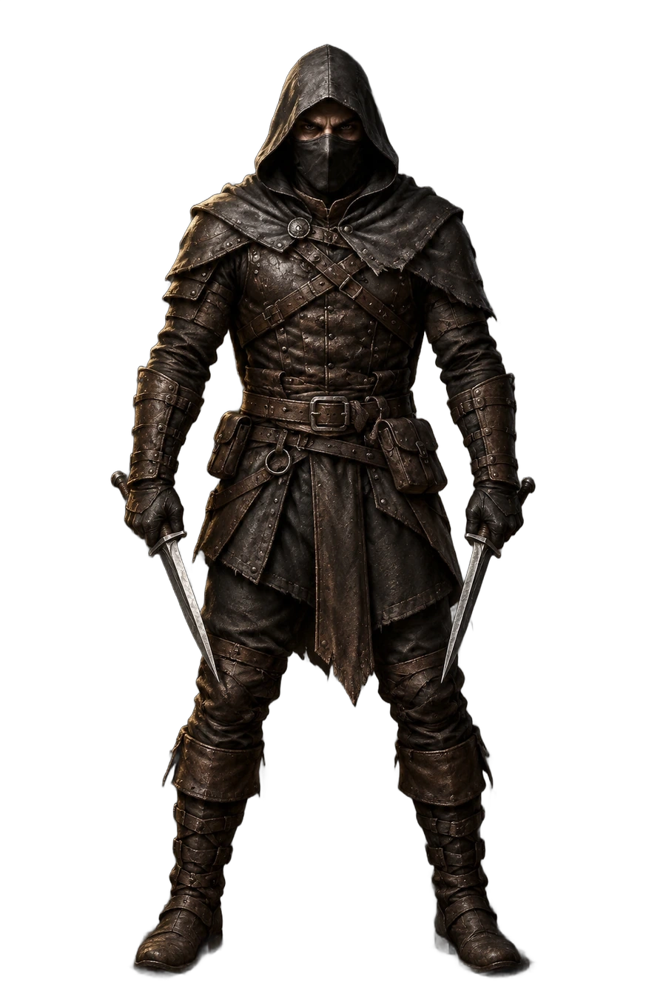
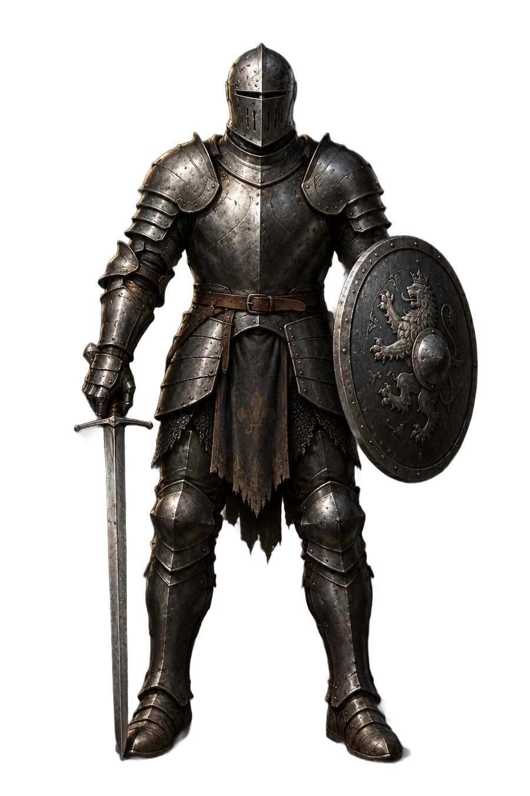
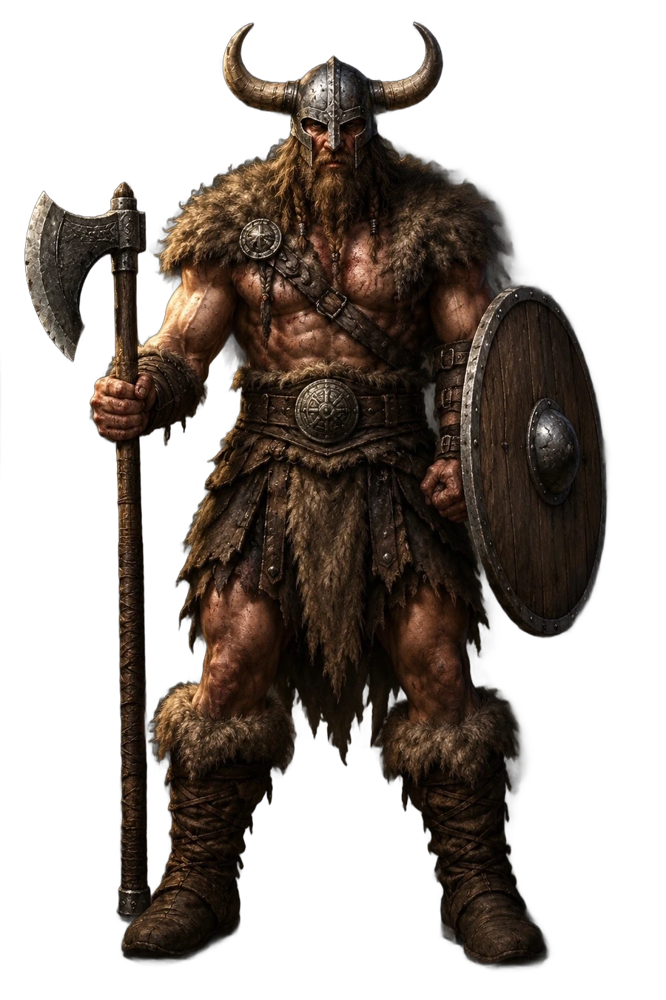

ASSASSINO · ASTRALEMITICO

Osservatorio cosmico, portale delle galassie, rune d'oro e rovine sospese.
Sei combinazioni con i tre personaggi originali della tua app: stessi WebP trasparenti, posa, proporzioni, armi, armatura e ingrandimento. Sono nuovi soltanto ambienti ed effetti di luce. Anteprima non pubblicata nello Shop.


